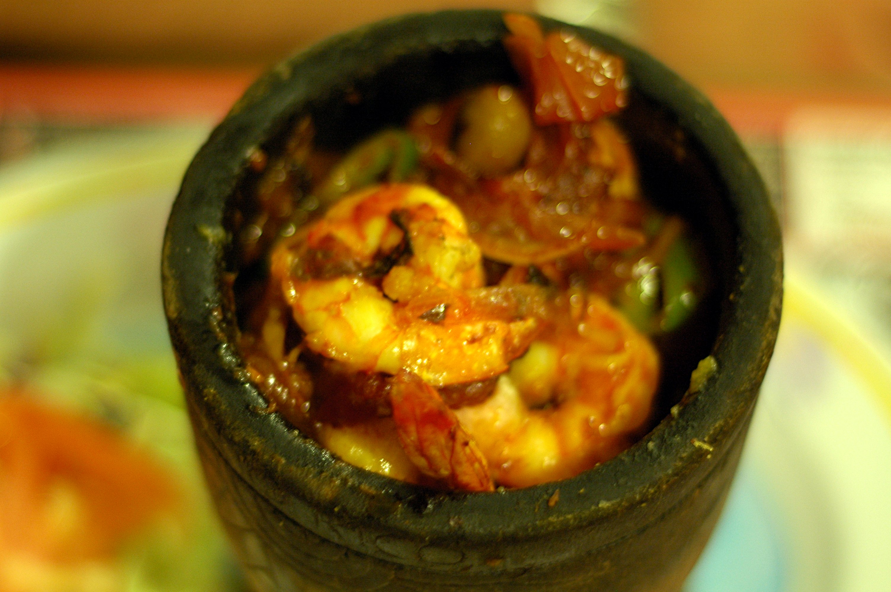
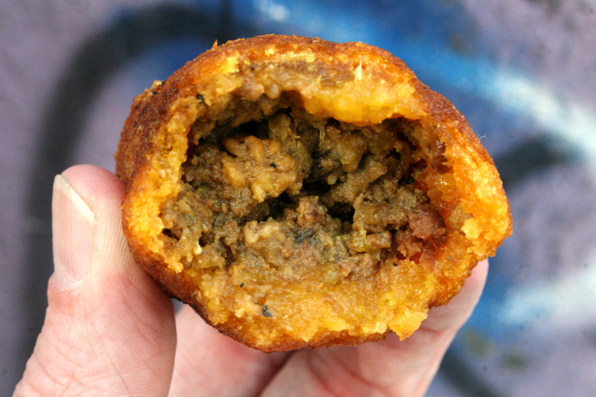
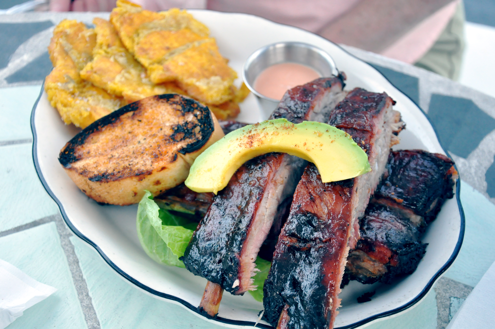

Comida de Puerto Rico
La gastronomía portorriqueña se caracteriza por platos coloridos y consistentes y cuenta con una gran riqueza de ingredientes y sabores gracias a la excelente mezcla de culturas que poblaron la isla a lo largo de la historia. La cocina boricua se basa en diferentes tipos de carne adobada acompañada por arroz y habichuelas. Son comunes los platos fritos, siendo el plátano el ingrediente más común.
Platos típicos de Puerto Rico
En Puerto Rico las porciones de comida son muy abundantes por lo que es prácticamente imposible quedarse con hambre con nuestros consistentes platos.
A continuación, podrás observar algunas de las delicias que disfrutarás si visitas la isla:
Mofongo
El mofongo es uno de los platos más tradicionales de Puerto Rico y es posible encontrarlo en diferentes modalidades. Se trata de una especie de “volcán” de textura consistente hecho a base de plátano frito que se rellena de pollo, carne o mariscos.
Arroz mamposteao
Como base principal de la cocina boricua, el arroz se prepara de formas muy variadas. En el caso del arroz mamposteao, se mezcla con habichuelas guisadas y se sofríe junto con pimiento, jamón y ajo.
Alcapurrias
Reinas de las frituras de la isla, las alcapurrias están hechas con masa de plátano o yuca que generalmente se rellena de carne. Esta opción tan crujiente se suele ofrecer en los puestos de la calle o bien en los locales especializados en frituras conocidos como cuchifritos.
Bistec encebollado
Este plato de carne es una de las recetas estrella de la isla gracias a su gran sabor y su suave textura, que se obtiene al cocinar la carne marinada a fuego lento.
Tostones
Ideales para acompañar algunos platos o bien para utilizarlos como “tostadas”, se trata de rodajas de plátano verde que se fríen dos veces hasta que se alcanza su punto más crujiente.
Arroz con habichuelas

Tan sencillo como delicioso, el arroz blanco con un cuenco de habichuelas preparadas a fuego lento es un acompañamiento delicioso que no puede faltar en ninguna mesa.
Tembleque
El tembleque de coco es un postre suave que se consume especialmente durante las fiestas navideñas. Las diferentes recetas portorriqueñas cuentan con el coco, el azúcar y la vainilla como puntos en común.
Referencia
https://www.civitatis.com/blog/que-comer-puerto-rico